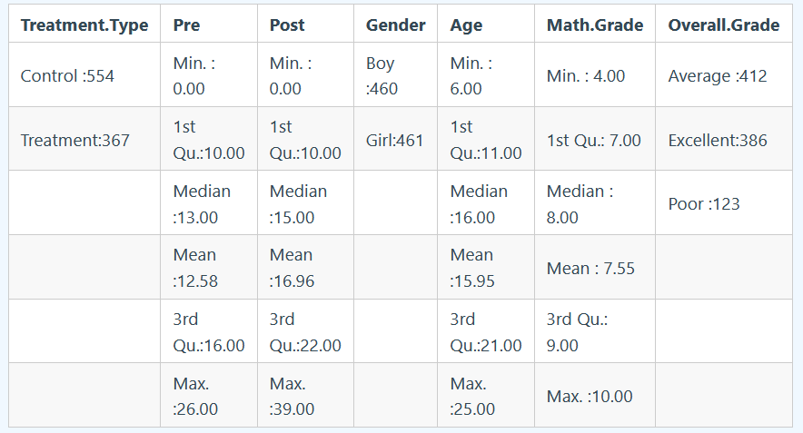
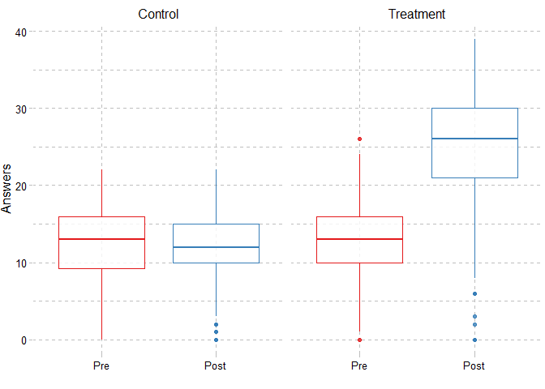
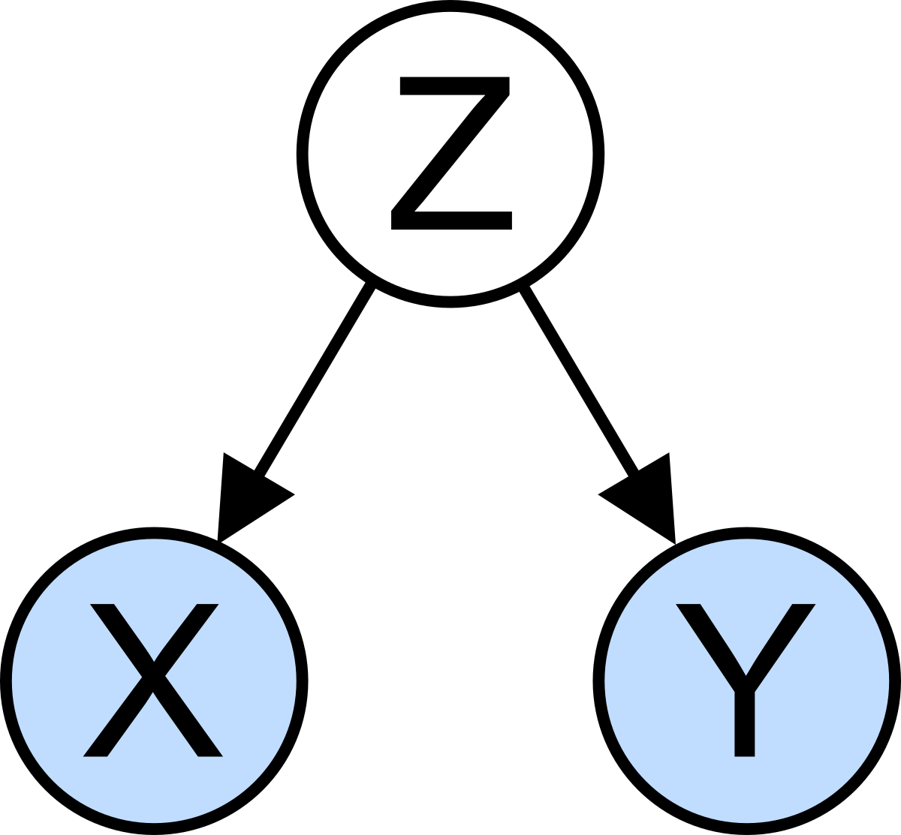
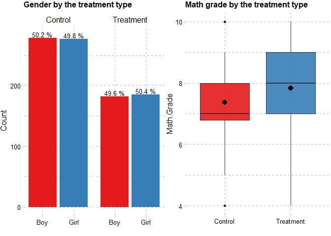
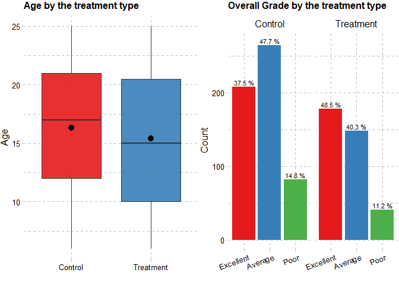
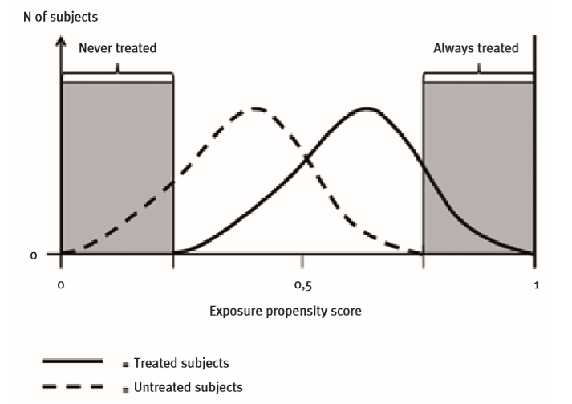
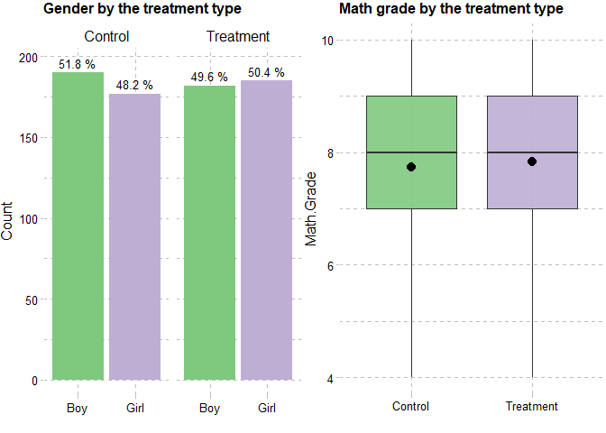
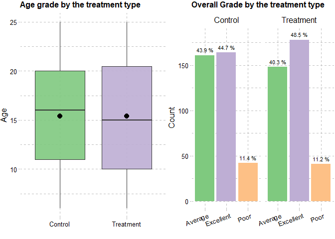

Introduction
The research question is whether playing chess is correlated with the improvement in logical thinking. Previous research, conducted in a number of countries , indicates that playing a game of chess increases concentration, logical and critical thinking, as well as the ability to plan and analyse.
Should one aim at increasing the level of logical thinking among university students and schoolchildren by playing chess, the following steps are to be taken. Once the population, sampling method, sample size and other crucial elements of research are defined, the sample should be taught how to play a game of chess This may be reached by including a relevant curriculum into the syllabus[1]. The second step to take would be to conduct pre- and post-tests to measure the performance before and after a six-month course. Finally, the analyses of the data would indicate whether the experiment had a significant effect and whether the project is worth replicating.
Assuming all the mentioned steps were adhered to and the evaluation of the effectiveness of the program for university and school students has been launched, let us review the artificially generated ! data. The summary of the dataset is presented below.

We have 7 variables and 921 observations without any missing values. The
variable Treatment.Type shows the group (Control or Treatment) to
which students were randomly assigned. The variables Pre and Post
show the number of correct answers out of 40 logical questions. Last 4
variables are the characteristics of the students: the gender, age, math
grade of a student for the last semester, and overall grade by the end
of the semester.
The group, used for baseline measures, is called Control group, and the group that receives an experimental procedure is Treatment. To estimate the effect of teaching how to play chess (“treatment effect”) we can use the linear regression model that compares the change in averages of students’ logical scores (outcome variable) between Pre and Post surveys across the control and treatment groups (dummy independent variables). This regression model is known as the difference in difference (DiD) analysis. Before conducting regression analysis let us observe the visual display of the treatment effect:

It is clear that unlike the pre-test results after the teaching program students from the treatment group tend to answer most of the questions correctly. In the absence of the treatment the true effect of time shows that there is no noticeable difference between the number of correct answers at Pre- and Post-test.
DiD
The result of linear regression is in the output below:
##
## DID Results
## ===========================================================
## Dependent variable:
## ---------------------------
## Answers
## -----------------------------------------------------------
## Group (Treatment) 0.258
## (0.343)
##
## Time (Post) -0.648**
## (0.306)
##
## Group * Time (Treatment * Post) 12.602***
## (0.485)
##
## Constant 12.480***
## (0.217)
##
## -----------------------------------------------------------
## Observations 1,842
## R2 0.487
## Adjusted R2 0.486
## Residual Std. Error 5.097 (df = 1838)
## F Statistic 581.677*** (df = 3; 1838)
## ===========================================================
## Note: *p<0.1; **p<0.05; ***p<0.01
The coefficient of Group * Time (Treatment * Post) itself is the
difference in differences estimator which tells us whether the expected
mean changes in the outcome from pre to post are different in the two
groups. At post-test, the students in the treatment group had on average
12.6 correct answers more than those from the control group. Regression
analysis shows that the effect of treatment is high and significant.
Is this a reliable result or are there any other factors that have not been considered? Provided that this is an introduction to a lengthy article (see the scrollbar), the more probable answer is “yes, we have omitted something”. Let us discuss briefly the concepts of confounding variable or confounding factor and the ways in which it can be eliminated.
The problem
Confounding bias and Randomization test

The association treated by the regression analysis above can be spurious
because there may be other factors affecting both the independent
variable (treatment) and dependent variable (correct answers). Let us
consider the illustration above: Z is a confounding factor, we have
not accounted for, which influences both dependent (Y) and independent
variables (X), creating the correlation between the last two
variables. In this case, any baseline personal characteristic, unevenly
distributed to the groups, can be the cause of bias.
Local conclusion: As we are interested in estimating the effectiveness of the teaching program for students and pupils, we need to be sure that groups are assigned randomly to avoid the bias. Before starting the analysis, we should measure the level of imbalance between the treatment and control groups and, should the personal differences be statistically significant, control for them.
In order to check the existence of confounding effect, the balance
diagnostics should be performed on all possible confounding variables.
We can use the Chi-squared test of independence for categorical
variables (gender and overall grade), and ANOVA for numeric variable
Math.grade and age.
Chi-squared test result
| Variable | ChiSquare | P.value |
|---|---|---|
| Gender | 0.012 | 0.9142 |
| Overall.Grade | 11.150 | 0.0038 |
ANOVA results
| Variable | F | P.value |
|---|---|---|
| Math.Grade | 30.615 | 0.0000 |
| Age | 5.853 | 0.0157 |
For variables with the p > .05 , we do not reject the null hypothesis of independence of variables. We can conclude that the groups are independent from the gender at .05 significance level. However, the statistics for the remaining variables show that students in different groups (treatment and control) have different personal characteristics. To avoid being overly technical, we can describe the problem of the randomization through the graphs below:

The graphs illustrate that the distribution of students by gender in both groups are similar, however, the median value of math grade of students in the treatment group is noticeably higher and they had obtained higher math grades the previous semester.

The students/pupils in the control group are older and their overall grades are lower in comparison with the students in the treatment group. The problem is in the sectional bias, so we need to adjust it. In the observational studies, treatment selection is often influenced by subject characteristics. Suppose, we did the regression above and inferred that the treatment effect of teaching how to play the game of chess is valid. However, there is a possibility that the effect is significant and positive not as a result of efficient seminars, but because apriori the treatment group “contains” students with “better” characteristics: the ability to learn “faster”, or which are quite favored to know/learn more. Thus, this is not the pure effect of seminars, because baseline characteristics of students differ systematically from those of untreated students. What should be done? The answer is to randomize the existing data.
The solution
Propensity scores
There are different ways of performing randomization. In this case, we will discuss the method called Propensity Score Matching (PSM), normally used in pharmacoepidemiologic researche containing large healthcare databases. We need to calculate some scores (propensity score) and classify students according to these scores. In a randomized study the propensity score is known: if the treatment was assigned randomly, then the propensity score for each subject is 0.5. However, in observational (or nonrandomized) studies, we need to estimate the fitted values for scores. The question is why do we need to estimate the probability that a subject receives a certain treatment since we already have these groups? The answer is that to have the pure effect of treatment we want to do randomization artificially, and the propensity score is not known. After obtaining this score we will find two subjects: one in the treated group and one in the control, with the same or similar propensity scores. Then we can imagine that these two subjects were “randomly” assigned to each group in the sense of being equally likely to be treated or to be in the control group.
The propensity score is the estimated conditional probability
(propensity) of receiving treatment based on the covariates included in
the propensity score model:$PS = P(X=1|Z=z),$ where PS is propensity score, X is the binary variable with 0 value,
if the student is in the control group and, X = 1, then a student is
in the treatment group, and Z is covariates (student characteristics).
The propensity score is most often (not always[2]) estimated using a logistic regression model, where treatment status is regressed on a common set of explanatory variables (gender, age, math grade, overall grade of a student), such as:
$log \frac{P(X = 1)}{1-P(X = 1)} = \beta_0 + \beta_1Z_1 +…+\beta_kZ_k$
The propensity score plays an important role in balancing the study groups to make the treated and untreated groups comparable. The authors of this method, Rosenbaum and Rubin, showed that treated and untreated subjects with the same propensity scores have identical distributions for all background covariates, which is quite intuitive. Exact adjustments using the propensity score will, on average, remove the bias in the baseline variables. We can divide the sample into subgroups, for example quintiles, based on the propensity scores. As Rosenbaum states, in matching we find a subset of untreated individuals whose propensity scores are similar to those of the treated persons, or vice-versa. The goal of matching is to create a dataset that looks closer to the one that would result from a possibly randomized experiment. Note that in matching we use the propensity scores rather than all covariates individually, so we have a chance to control for many confounding factors simultaneously by matching on a single scalar variable.
Matching
The propensity score can be used to reduce confounding via matching, stratification, regression adjustment, or any combination of these strategies. Let us now consider the matching. Matching is a common technique used to select students for the control group who are matched with the students from the treated group on background covariates. So, after the estimating score individuals with similar estimated propensity scores will be chosen and they will have, on average, similar chances of receiving the treatment. Note that even if the propensity score is similar, they may have different patterns of covariates at an individual level. To that end, we need the distribution of covariates to be the similar within the matched treated and control groups.
 For more details see Schneeweiss S. A basic study design for expedited safety signal evaluation based on electronic healthcare data.
On the left extreme end of the distributions are the students and pupils from the control group with a low probability of being included in the treatment group. On the right extreme one we can notice the students from the treatment group with a very high probability of being treated. Conversely, the overlapping area will identify students/pupils who have comparable propensity scores among treated and control students and are therefore better candidates for inclusion in a comparative analysis. After the matching, the distribution of observed baseline covariates that were considered in the propensity score model must be similar.
The most common implementation of propensity score matching is one-to-one or pair matching, in which pairs of treated and untreated subjects are formed in a way that matched subjects have similar values of the propensity score. Although one-to-one matching appears to be the most common approach to propensity score matching, other approaches can also be used. The next common method for matching is the nearest neighbour matching. Nearest neighbour matching selects for matching to a given treated subject that untreated subject whose propensity score is closest to that of the treated subject. If multiple untreated subjects have propensity scores that are equally close to that of the treated subject, one of these untreated subjects is selected randomly (Patorno, Grotta et al.). Rassen et al. have shown that a variation of the nearest-neighbor matching algorithm, the pairwise nearest-neighbor matching algorithm, is computationally fast and provides better balance among the treatment groups. That is why we use this method in our calculations. Let us now return to our case study. Before taking any randomization steps we have the following proportion of groups:
| Control | Treatment |
|---|---|
| 554 | 367 |
To show the result of propensity score matching, we will use the R programming language. In R, Ho et al. developed the package MatchIt (available from the Comprehensive R Archive Network), which implements different types of matching algorithms and provides various tools to assess the balance of data. From the R journal: MatchIt is designed for causal inference with a dichotomous treatment variable and a set of pretreatment control variables. Any number or type of dependent variables can be used. MatchIt is usually used for observational studies where the treatment variable is not randomly assigned by the investigator, or the random assignment goes wrong. The main command matchit() implements the matching procedures. Here is the simple case for balancing the data.
ChessWide <- read.csv("chess.csv")
# Use install.packages("MatchIt") to install the package
library(MatchIt)
# Changing the labels of target variable for matchit() function.
ChessWide$Treatment.Type = ifelse(ChessWide$Treatment.Type == "Control", 0, 1)
# Data will be matched without one variable (Gender).
# Different matched data can be obtained, for reproducible result the set.seed is used.
set.seed(2708)
# The dependent variable is dichotomous treatment variable.
# The covariates are pre-treatment characteristics of students.
# This command creates the MatchIt object called match.
match <- matchit(Treatment.Type ~ Age + Math.Grade + Overall.Grade,
data = ChessWide, method = "nearest")
# The function match.data() is used to create the matched data from the MatchIt.
# output object by excluding unmatched units from the original data.
matcheddata <- match.data(match)
# Creating function for comparison (results of Chi-squared and ANOVA tests).
comparetable <- function(data){
pacman::p_load(tableone)
tab <- CreateTableOne( vars = c("Gender", "Age", "Math.Grade", "Overall.Grade"),
data = data,
factorVars = c("Gender", "Overall.Grade"),
strata = 'Treatment.Type')
tab <- print(tab, printToggle = FALSE, noSpaces = TRUE)
tab[,-4]
}
# Relabel the data and see the result.
matcheddata$Treatment.Type = ifelse(matcheddata$Treatment.Type == 0,"Control", "Treatment")
knitr::kable(comparetable(matcheddata)) %>%
kableExtra::kable_styling(bootstrap_options = "striped", full_width = F)
| Control | Treatment | p | |
|---|---|---|---|
| n | 367 | 367 | |
| Gender = Girl (%) | 177 (48.2) | 185 (50.4) | 0.605 |
| Age (mean (SD)) | 15.41 (5.47) | 15.40 (5.74) | 0.979 |
| Math.Grade (mean (SD)) | 7.73 (1.25) | 7.83 (1.33) | 0.305 |
| Overall.Grade (%) | 0.568 | ||
| Average | 161 (43.9) | 148 (40.3) | |
| Excellent | 164 (44.7) | 178 (48.5) | |
| Poor | 42 (11.4) | 41 (11.2) |
Treatment.Type is the dichotomous treatment variable,
Gender, Age, Math.grade, Overall.Grade pre-treatment covariates, all
of which are contained in the data frame ChessWide[3]. The dependent
variable may be included in ChessWide for convenience but is never used
by MatchIt or included in the formula.


The distribution of variables across treatment and control group is relatively similar, the test result also indicates that there is no significant difference between groups on personal characteristics of students. The effect of the treatment can now be estimated as the difference between the average outcome for treated students and the mean outcome for untreated students in the matched sample. Although there is no noticeable difference between results, the second parametric analysis is more reliable because it is based on matched data.
# For regression analysis we use the data in the long format
MLong <- tidyr::gather(matcheddata, PrePost, Answers, c(Pre,Post), factor_key=TRUE)
matchedmodel <- lm(Answers ~ Treatment.Type + PrePost + Treatment.Type * PrePost,
data = MLong)
stargazer::stargazer(matchedmodel,
title = "DID Results",
dep.var.labels = c("Answers"),
out="models.htm",
type = "text",
header=FALSE,
covariate.labels = c(
"Group (Treatment)",
"Time (Post)",
"Group * Time (Treatment * Post)"
))
##
## DID Results
## ===========================================================
## Dependent variable:
## ---------------------------
## Answers
## -----------------------------------------------------------
## Group (Treatment) 0.357
## (0.393)
##
## Time (Post) -0.834**
## (0.393)
##
## Group * Time (Treatment * Post) 12.787***
## (0.556)
##
## Constant 12.381***
## (0.278)
##
## -----------------------------------------------------------
## Observations 1,468
## R2 0.509
## Adjusted R2 0.508
## Residual Std. Error 5.329 (df = 1464)
## F Statistic 505.610*** (df = 3; 1464)
## ===========================================================
## Note: *p<0.1; **p<0.05; ***p<0.01
Conclusion
All in all, randomization is a popular method to block or minimize potential imbalance between the treatment and control groups in order to control the confounding. We used popular method Propensity score matching for providing the random or pseudorandom data for analysis. The basic steps for PSM implementation are:
-
Fit the logit (or other) model, where the dependent variable is treatment groups and the independent variables are confounding variables.
-
Split the sample into user-defined k intervals of the propensity scores.
-
Within each interval, run a test to assure that the average propensity score of control and treated units does not differ.
-
If the test fails in one interval, split the interval in half and test again.
-
Continue until the distribution is equal in both groups.
-
Test the difference (using average value or proportion) for characteristics to determine the difference between groups.
-
Conduct the parametric (or other) analysis using the matched balanced data
It seems that PSM is an ideal method for balancing data. However, authors state some drawbacks in PSM. One of them is that the results of using the propensity scores are conditional only on the observed covariates. Thus, unmeasured confounding bias cannot be excluded. Other illustrations of PSM drawbacks may be found here.
Reference List
P. Rosenbaum, D. Rubin, “The Central Role of the Propensity Score in Observational Studies for Causal Effects.”
E. Patorno, Al. Grotta, et al, “Propensity score methodology for confounding control in health care utilization databases.”
S. Schneeweiss, “A basic study design for expedited safety signal evaluation based on electronic healthcare data.”
[1] Chess became a compulsory subject in the national school curriculum of Armenia since 2011
[2] The use of bagging or boosting, recursive partitioning or tree-based methods, random forests and other methods for estimating the propensity score can be examined.
[3] The long format of data is for regression analysis, and wide format for matching and visualization.